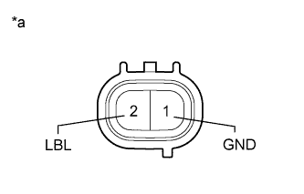

DTC C1453 Reservoir Level Switch Disconnected |
DTC C1454 Reservoir Level Low |
| DTC Code | DTC Detection Condition | Trouble Area |
| C1453 | With the ECU terminal IG1 voltage at 10 to 14 V, an open in the brake fluid level warning switch circuit continues for 2 seconds or more. |
|
| C1454 | The fluid level of the reservoir is below the LOW level for 40 seconds after the engine switch is turned on (IG), or for 7 seconds during pump motor operation. |
| 1.CHECK BRAKE FLUID LEVEL |
Turn the engine switch off.
Depress the brake pedal 40 times or more (until the pedal reaction feels light and pedal stroke becomes longer).
Check the amount of fluid in the brake reservoir.
|
| ||||
| OK | |
| 2.INSPECT BRAKE FLUID LEVEL WARNING SWITCH |
Disconnect the A34 brake fluid level warning switch connector.
|  |
Measure the resistance according to the value(s) in the table below.
| Tester Connection | Switch Condition | Specified Condition |
| 1 (GND) - 2 (LBL) | Float UP (Switch off) | 1.9 to 2.1 kΩ |
| Float DOWN (Switch on) | Below 1 Ω |
| *a | Component without harness connected (Brake Fluid Level Warning Switch) |
|
| ||||
| OK | |
| 3.CHECK HARNESS AND CONNECTOR (SKID CONTROL ECU - BRAKE FLUID LEVEL WARNING SWITCH) |
Disconnect the A7 skid control ECU connector.
Disconnect the A34 brake fluid level warning switch connector.
Measure the resistance according to the value(s) in the table below.
| Tester Connection | Condition | Specified Condition |
| A7-41 (LBL) - A34-2 (LBL) | Always | Below 1 Ω |
| A7-41 (LBL) - Body ground | Always | 10 kΩ or higher |
| A34-1 (GND) - Body ground | Always | Below 1 Ω |
|
| ||||
| OK | |
| 4.RECONFIRM DTC |
Clear the DTC (Click here).
Turn the engine switch off.
Start the engine and idle it for approximately 40 seconds.
Check if the same DTC is output (Click here).
| Result | Proceed to |
| DTC is not output | A |
| DTC is output | B |
|
| ||||
| A | ||
| ||